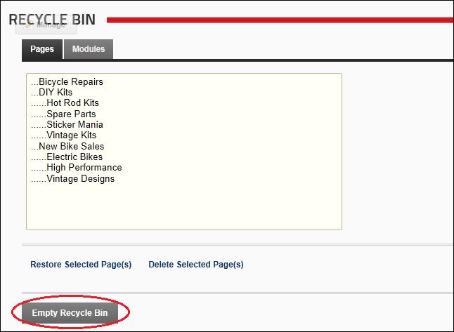

Emptying the Recycle Bin
How to permanently delete all pages and modules from the Recycle Bin module.
Authenticated users who have been granted Edit Module (Edit Content) permissions.
- Navigate to Admin > Recycle Bin - OR - Navigate to a Recycle Bin module.
- Click the Empty Recycle Bin button. This displays the message "Are You Sure You Wish To Permanently Delete All Pages and Modules?"

- Click the Yes button to confirm.